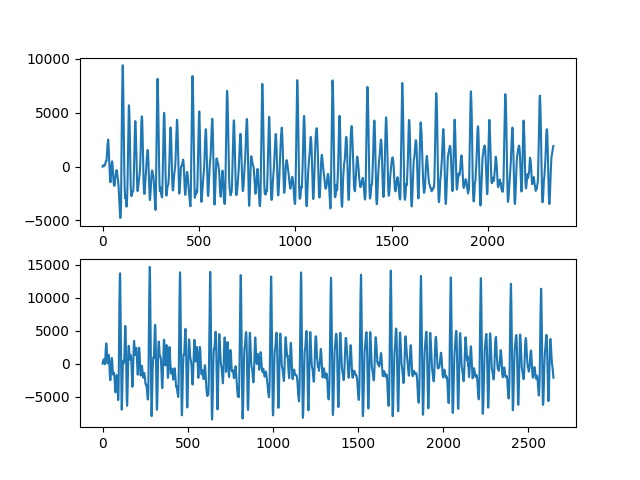
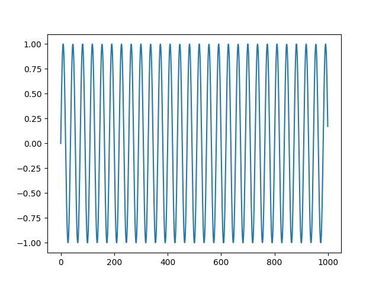
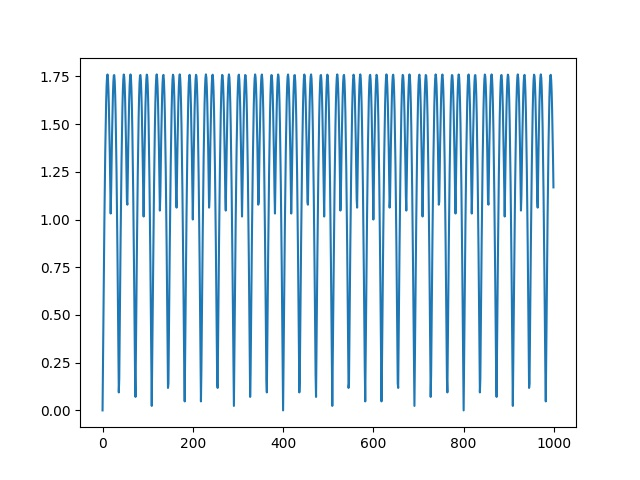
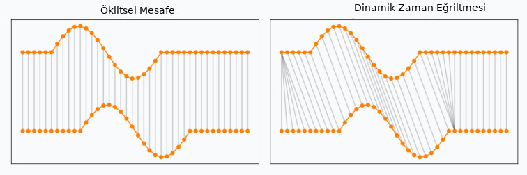
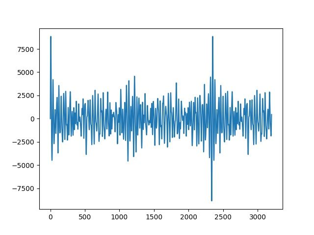

Ses Tanıma, İşleme
Veri Okuma, Yazma
Okuma işlemi scipy.io.wavfile ile yapılabilir, tek boyutlu bir vektör
elde edilecektir. Bir örnek görelim,
import scipy.io.wavfile
tmp, wav1 = scipy.io.wavfile.read('phonemes/ow.wav')
tmp, wav2 = scipy.io.wavfile.read('phonemes/ao.wav')
fig, axs = plt.subplots(2)
axs[0].plot(wav1)
axs[1].plot(wav2)
plt.savefig('ses_01.jpg')

Ses verisi sonuçta bir zaman serisidir. Şekil olarak iki temel sesin (fonem) birbirinden farkı görülebiliyor.
Bu ses dosyalarını komut satırında çalmak için aplay ya da ffmpeg
kullanılabilir.
Eğer elde tek boyutlu bir ses verisi varsa diske yazmak için
scipy.io.wavfile.write,
fs = 16000
wav1tmp = wav1 + 1000
scipy.io.wavfile.write('/tmp/out1.wav', fs, np.array(wav1tmp))
İlginç bir durum ses dosyasını yukarı kaydırdık fakat ses çalınınca hala aynı ses duyuluyor.
Fakat tüm ses verisini 100 ile bölersem, bu ``ses kısması'' demek, ses azalır.
Ses Oluşturma
Kendimiz sinüs bazlı sesler yaratabilirdik,
import scipy.io.wavfile
fs = 16000
T = 1.0 # seconds
t = np.linspace(0, T, int(T*fs), endpoint=False)
x = np.sin(2*np.pi*440*t)
scipy.io.wavfile.write('/tmp/out2.wav', fs, x)
tmp, wav3 = scipy.io.wavfile.read('/tmp/out2.wav')
plt.plot(wav3[:1000])
plt.savefig('ses_02.jpg')

fs = 16000
T = 1.0
t = np.linspace(0, T, int(T*fs), endpoint=False)
x = np.abs(np.sin(2*np.pi*440*t))
t = np.linspace(0, T, int(T*fs), endpoint=False)
x2 = np.abs(np.sin(2*np.pi*220*t))
xx = x+x2
scipy.io.wavfile.write('/tmp/out2.wav', fs, xx)
tmp, wav4 = scipy.io.wavfile.read('/tmp/out2.wav')
plt.plot(wav4[:1000])
plt.savefig('ses_03.jpg')

Altta bir polis sireni örneği,
y = sin(2*pi*1500*t - 100*sin(2*2*pi*t))
Beyaz Gürültü
fs = 16000
y = np.random.randn(fs*10).astype(np.float32)
scipy.io.wavfile.write('/tmp/out4.wav', fs, y)
Ya da
from scipy import stats
sample_rate = 44100
length_in_seconds = 3
amplitude = 11
noise = stats.truncnorm(-1, 1, scale=min(2**16, 2**amplitude)).rvs(sample_rate * length_in_seconds)
scipy.io.wavfile.write('/tmp/noise.wav', sample_rate, noise.astype(np.int16))
Ses Verisini Karşılaştırmak
Ses verisi bir tür zaman serisi olduğuna göre bu zaman serisini bildik araçlarla karşılaştıramaz mıyız? Mesela basit korelasyon, ya da basit Öklitsel uzaklık ölçütleri ile bir mesafe irdelemesi kullansak olmaz mi acaba?
Eğer amaç ses tanıma ise, basit karşılaştırma yöntemleri problem çıkartabilir. Standart karşılaştırma metotları aynı boyutlarda ve zaman dilimleri birbirine uyan veriyi bekler. Fakat gürültü konusunu bir kenara bıraksak, boyutsal, genlik (amplitude) uyuşmazlık problemleri olabilir. Yani aynı ses bazen daha yüksek genli, bazen faz olarak sağa, sola kaymış olabilir, ya da ses verisi daha çok zamana yayılmış olabilir. Bu tür veri durumlarında, özellikle ses karşılaştırmasında Dinamik Zaman Eğriltmesi (Dynamic Time Warping -DTW-) metotu var.
Dinamik Zaman Eğriltmesi

DTW ile iki zaman serisi arasında bir eşleme aranır, öyle ki optimal eşleme üzerinden iki zaman serisi arasındaki toplam mesafe en minimal olsun. Eğriltme metaforu niye kullanılmış resme bakınca anlıyoruz, bir serideki her zaman dilimi birebir diğer serideki aynı zaman noktasına eşlenmiyor, serilerin arasında kayma, büyüme, küçülme olabileceği beklentisi ile eşleme farklı şekillerde olabiliyor, eşlemede "eğrilme" görülebiliyor. Hatta bazen aynı zaman noktası diğer serideki birkaç farklı noktaya bile eşlenebiliyor!
Bahsedilen eşlemenin bulunması bir arama gerektirir, pek çok seçenek arasından arama yapılmalıdır, ve bu arama, $M$ ve $N$ büyüklüğündeki iki zaman serisi için başlangıç DTW algoritmasında $O(M N)$ karmaşıklığına [1] sebep olur. Bu arama çok daha fazla yavaşlığa sahip olabilirdi, fakat dinamik programlama ile bu süre biraz daha kısaltılabiliyor. Detaylar için [1,4,5].
Standart DTW algoritması simpledtw.py içinde bulunabilir. Kullanım örneği,
import simpledtw
series_1 = [1, 2, 3, 2, 2.13, 1]
series_2 = [1, 1, 2, 2, 2.42, 3, 2, 1]
series_3 = [4, 3, 1, 9, 9.2, 1, 1, 1]
matches, cost, mapping_1, mapping_2, matrix = simpledtw.dtw(series_1, series_2)
print (cost)
matches, cost, mapping_1, mapping_2, matrix = simpledtw.dtw(series_1, series_3)
print (cost)
0.5499999999999998
18.94
Ses verileri için aynı işlemi uygulayabiliriz,
import scipy.io.wavfile
tmp, wav1 = scipy.io.wavfile.read('phonemes/b.wav')
tmp, wav2 = scipy.io.wavfile.read('phonemes/d.wav')
tmp, wav3 = scipy.io.wavfile.read('phonemes/ay.wav')
matches, cost, mapping_1, mapping_2, matrix = simpledtw.dtw(wav1, wav2)
print (cost)
matches, cost, mapping_1, mapping_2, matrix = simpledtw.dtw(wav1, wav3)
print (cost)
856568.0
3479812.0
Üstteki işlemin biraz yavaş işlediği farkedilebilir, bunun sebebi karmaşıklığın $O(MN)$ ya da aşağı yukarı benzer uzunluktaki seriler için $O(M^2)$ olması. Karesel karmaşıklık hep kaçınmaya uğraştığımız bir durum, mümkün olduğu kadar $O(M)$'e yakın olmak isteriz.
Hızlandırma amaçlı bir algoritma FastDTW [2,3] yaklaşımı, $O(M)$
karmaşıklığına sahiptir. Kodlaması fastdtw.py içinde. Aynı veriler
üzerinde kullanalım,
from scipy.spatial.distance import euclidean
import fastdtw
distance, path = fastdtw.fastdtw(wav1, wav2, dist=euclidean)
print (distance)
distance, path = fastdtw.fastdtw(wav1, wav3, dist=euclidean)
print (distance)
865169.0
3619304.0
Bu çağrının çok daha hızlı işlediğini göreceğiz.
Ses komut örnekleri üzerinde aynı programı işletelim (diğer komut ses dosyaları [7] zip dosyasında var). Bu komutlardan ilk ikisi farklı konuşmacıların söylediği "bed" kelimesi, üçüncüsü "down" kelimesi. Acaba birinci ses komut dosyası 2'inci ve 3'üncü arasından hangi ses zaman serisine daha yakın çıkacak?
tmp, wav1 = scipy.io.wavfile.read('vcommand/fb24c826_nohash_0.wav')
tmp, wav2 = scipy.io.wavfile.read('vcommand/fb7c9b3b_nohash_2.wav')
tmp, wav3 = scipy.io.wavfile.read('vcommand/fda46b78_nohash_1.wav')
distance, path = fastdtw.fastdtw(wav1, wav2, dist=euclidean)
print (distance)
distance, path = fastdtw.fastdtw(wav1, wav3, dist=euclidean)
print (distance)
10319233.0
19032652.0
İkinciye daha yakın çıktı, bu iyi bir sonuç.
Javascript
JS dilinde DTW için [8] kodu faydalı olabilir, indirip üst dizin seviyesinde
var dtw = require('./src/dynamic-time-warping.js');
var ser1 = [ 9, 93, 15, 19, 24 ];
var ser2 = [ 31, 97, 81, 82, 39 ];
var distFunc = function( a, b ) {
return Math.abs( a - b );
};
var dtw = new dtw.DynamicTimeWarping(ser1, ser2, distFunc);
var dist = dtw.getDistance();
console.log(dist);
şeklinde yazdığımız test başarılı sonuç verdi.
Fourier Analizi ile Sesi Sinüs Eğrilerine Ayırmak
tmp, wav1 = scipy.io.wavfile.read('phonemes/ow.wav')
fs = 16000
w = list(np.fft.fft(wav1))
freqs = np.fft.fftfreq(len(w))
max_freqs = []
for i in range(20):
idx = np.argmax(np.abs(np.array(w)))
freq = freqs[idx]
del w[idx]
freq_in_hertz = abs(freq * fs)
max_freqs.append(freq_in_hertz)
print (max_freqs)
[444.2545920546775, 451.0892780862879, 539.9401964972235, 526.2708244340025, 519.4361384023921, 553.6095685604442, 396.41178983340455, 355.40367364374197, 177.70183682187098, 239.2140111063648, 505.7667663391713, 580.948312686886, 423.7505339598462, 512.6014523707817, 423.7505339598462, 526.2708244340025, 676.6339171294319, 567.2789406236651, 820.1623237932507, 950.0213583938488]
T = 0.2
tmp = np.zeros((1,int(T*fs)))
for f in max_freqs:
t = np.linspace(0, T, int(T*fs), endpoint=False)
x = np.sin(2*np.pi*f*t)
tmp += x
tmp = tmp * 500.
scipy.io.wavfile.write('/tmp/out3.wav', fs, tmp[0])
import scipy.io.wavfile
tmp, wav11 = scipy.io.wavfile.read('/tmp/out3.wav')
plt.plot(wav11)
plt.savefig('ses_04.jpg')

Sinüssel Regresyon ile Ayırmak
import statsmodels.api as sm
import pandas as pd
df = pd.DataFrame(wav1)
df.columns = ['wav']
tt = np.linspace(0,1,len(df))
for p in np.linspace(1,3,500):
df['sin%f' % p] = np.sin(p*np.pi*df.index.astype(float))
df['cos%f' % p] = np.cos(p*np.pi*df.index.astype(float))
X = sm.add_constant(np.array(df.drop(['wav'],axis=1)))
Y = df.wav.astype(float)
model = sm.OLS(Y,X)
results = model.fit()
print (results.params[:5])
print (results.pvalues[:5])
print ('R^2', results.rsquared)
print (len(df.columns[results.pvalues < 0.05]))
print (len(df))
const -1.746267e+00
x1 -3.873460e+13
x2 4.141772e+10
x3 8.071563e+13
x4 -9.792258e+12
dtype: float64
const 0.972714
x1 0.893328
x2 0.902068
x3 0.343704
x4 0.903365
dtype: float64
R^2 0.5121417785266622
48
2341
Kaynaklar
[1] SimpleDTW
[2] FastDTW Kod
[3] FastDTW Makale
[4] Tavenard, An introduction to Dynamic Time Warping
[5] Mishra, Time Series Similarity Using Dynamic Time Warping -Explained
[6] Bayramlı, Finans ve Zaman Serileri - Sezonsallık, Periyotlar
[8] Lesti, dynamic-time-warping
Yukarı